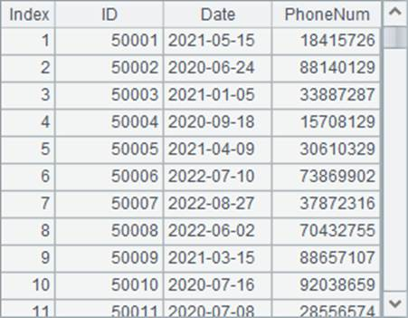
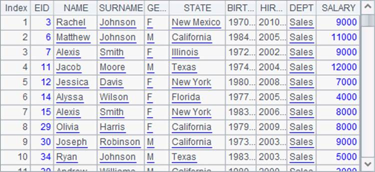
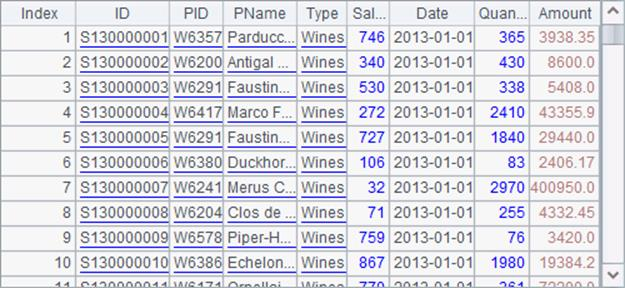

7.10.1 Basic uses
The cross-cellset cursor is typically used to handle big data analysis and computing, but it doesn¡¯t impose a minimum limit on data volume. First look at a case with relatively small data volume. Here¡¯s the cellset D:\files\FindEmployees1.dfx:
|
|
A |
|
1 |
$(demo) select * from EMPLOYEE where DEPT = ?;arg1 |
|
2 |
>output("before return") |
|
3 |
return A1 |
The program in the cellset is simple. It retrieves data of employees in a certain department and returns a table sequence in A3 using a return statement. A2 uses output() function to output the execution information and status to the console. The arg1 used in A1 is a cellset parameter specifying the department name. The parameter can be set by clicking Program>Parameter on the menu bar:

Subroutines discussed the method of executing a program in another cellset file via call function. The cross-cellset cursor has a similar use, except that it will return a cursor using the cursor function. It calls the above cellset file in the main cellset program as follows:
|
|
A |
|
1 |
=cursor("FindEmployees1.dfx";"Sales") |
|
2 |
>output("before fetch") |
|
3 |
=A1.fetch() |
While creating a cross-cellset cursor with the cursor function, directly write the name of the to-be-invoked script file. Enter the parameter, if needed, after the file and use a semicolon to separate them. After the program is executed, the result of A1 is a cross-cellset cursor that is used in the same way as an ordinary cursor:

Using the fetch function, A3 returns a table sequence of employees of sales department:

Both cellsets use output function that outputs characters to the console during the execution, thus you can clearly see the execution order in the cellset. Click Tool>Options on the menu bar and then select Console takeover on the General page to see the output information:
It can be seen that the program in a specified cellset will only be invoked to kick off the cross-cellset computation when fetch starts to fetch data.
A1 calls the script file without using its full path. But this requires that the file is placed into esProc¡¯s main path or search path, whose configuration is the same as that in the cross-cellset call by call function. The configuration process will be explained again below.
Click Tool>Options on the menu bar to configure the main path and the search path on the Environment page, as shown below:

As in the above configuration, the script file can be invoked only by its name without the necessity of writing the full path, regardless of being placed in the main path or under any directory of the search path.
In the case of being integrated, the main path and search path of the script file need to be configured in the configuration file raqsoftConfig.xml:
<splPathList>
<splPath>E:\tools\raqsoft\esProc\demo\Case\Structural </splPath>
<splPath>D:\files\txt;D:\files</splPath>
</splPathList>
<mainPath>D:\files\demo</mainPath>